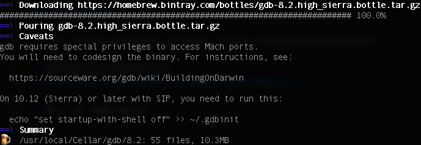

How to setup gdb and Eclipse to debug C++ files on macOS Sierra
Ref: https://www.thomasvitale.com/how-to-setup-gdb-and-eclipse-to-debug-c-files-on-macos-sierra/
Install gdb
brew install gdb
gdb requires special privileges to access Mach ports. You will need to codesign the binary. For instructions, see: https://sourceware.org/gdb/wiki/BuildingOnDarwin
On 10.12 (Sierra) or later with SIP, you need to run this:
``` echo "set startup-with-shell off" >> ~/.gdbinit ```

$ gdb --version
GNU gdb (GDB) 8.2
Copyright (C) 2018 Free Software Foundation, Inc.
License GPLv3+: GNU GPL version 3 or later
Generate a certificate
- Launch
Keychain Accessapplication:Applications > Utilities > Keychain Access. - From the Keychains list on the left, right-click on the
Systemitem and select Unlock Keychain “System”. - Go to menu
Keychain Access > Certificate Assistant > Create a Certificate. - Choose a name (e.g.
gdb-cert). - Set Identity Type to
Self Signed Root. - Set Certificate Type to
Code Signing. - Check the
Let me override defaultscheckbox - Click on
Createbutton.
Follow all steps, (Note: at last step, select system instead of default login)you can see the new certificate under System keychains. From the contextual menu of the newly created certificate (right-click on it) select the Get info option. In the dialogue box expand the Trust item and set Code signing to Always Trust.
Then, from the Keychains list on the left, right-click on the System item and select Lock Keychain “System”.
Reboot
Sign the certificate for gdb
$ codesign -s gdb-cert /usr/local/Cellar/gdb/8.2/bin/gdb
Potential issues
Unable to find Mach task port for process-id xxxx
// main.cpp
int
main() {
int a = 1;
int b = 2;
int c = a + b;
return c;
}
Compile
gcc -g -o main main.cpp
Test gdb
gdb main
GNU gdb (GDB) 8.2
...
Reading symbols from main...Reading symbols from /Users/y0w02p1/wy/codes/cpp/simplest/main.dSYM/Contents/Resources/DWARF/main...done.
done.
Try to run
(gdb) run
Encounter the following issue
Starting program: /Users/y0w02p1/wy/codes/cpp/simplest/main
Unable to find Mach task port for process-id 1026: (os/kern) failure (0x5).
...
Solution
sudo gdb main
To run gdb without sudo
Not Work !!!
Ref: https://stackoverflow.com/questions/10221448/emacs-24-and-gdb-6-3-on-mac-os-x/10441587#10441587
```bash sudo chgrp procmod /usr/local/Cellar/gdb/8.2/bin/gdb
sudo chmod g+s /usr/local/Cellar/gdb/8.2/bin/gdb ```
Set Eclipse for using gdb
...